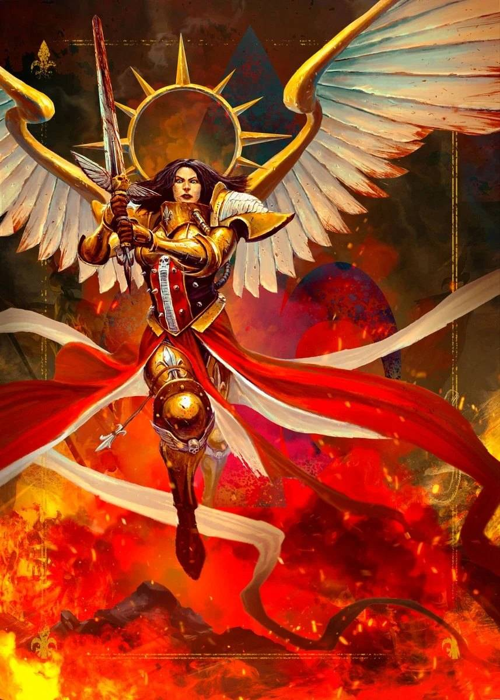

Imperial saint
| Imperial saint Sanctus Imperialis | |
|---|---|
 Saint Celestine, the Living Saint, as she has appeared in the Era Indomitus | |
| Religion | Imperial Cult |
| Recognised by | Adeptus Ministorum (the Ecclesiarchy), through its synods |
| Process | Beatification and canonisation |
| Number | Many thousands; uncounted local saints |
| Earliest | Martyrs of the Horus Heresy (005–014.M31), venerated in the Lectitio Divinitatus |
| Feast | Festival of Saints; individual saints' days |
| Notable | Sebastian Thor; Alicia Dominica; Saint Macharius; Saint Sabbat; Saint Celestine |
An Imperial saint is a person recognised by the Adeptus Ministorum, the Ecclesiarchy of the Imperial Cult, as holy: an individual through whom, in the Cult's teaching, the will of the Emperor of Mankind was made manifest. Saints are venerated across the Imperium of Mankind as intercessors, patrons and examples of faith. They include martyrs, soldiers, preachers, rulers and ordinary citizens, and they range from a handful of saints honoured across the whole Imperium to many thousands whose cult is confined to one sector, world or city.[1][2]
Most saints are declared after death, through the Ecclesiarchy's process of beatification and canonisation, which may take decades or centuries. A small number are Living Saints, persons believed to be touched by the Emperor's power while still alive; the best known is Saint Celestine, who has returned to fight for the Imperium many times since her first death, and who reappeared at the Fall of Cadia in 999.M41.[2][3]
History
[edit]Origins
[edit]The veneration of saints is as old as the Imperial Cult. The Lectitio Divinitatus, the secret creed that spread through the Imperial armies during the Great Crusade (c. 798.M30–005.M31) despite the Emperor's prohibition of religion under the Imperial Truth, already honoured those who died in the Emperor's name. After the Horus Heresy (005–014.M31) the Cult's first saints were the martyrs of the war, among them loyal soldiers and believers killed by the traitors.[1][4][a]
Formalisation
[edit]As the Ecclesiarchy grew into an institution of the Adeptus Terra in the 32nd millennium, it took control of the making of saints. The Liber Ecclesiasticus, compiled in M37, records the rules of canonisation used in the 41st millennium. The great expansion of the cult of saints came after the Age of Apostasy (early M36 to c. 310.M36), when the reformer Sebastian Thor (c. 238–350.M36) and Alicia Dominica, founder of the Adepta Sororitas (died mid-M36), were canonised, and the saints became the main point of contact between the Cult and its people.[1][2]
The Era Indomitus
[edit]The opening of the Great Rift in 999.M41 was followed by a marked increase in reported miracles and in the appearance of persons hailed as living saints, which the Ecclesiarchy has linked to the Psychic Awakening and to the return of Roboute Guilliman. Celestine has appeared repeatedly in the Indomitus Crusade, and the Ecclesiarchy has received petitions for the beatification of crusade dead from thousands of worlds.[3]
Canonisation
[edit]A candidate for sainthood is usually first venerated locally, by the people of the world where he or she lived or died. The local clergy may then petition the Ecclesiarchy's synod for the sector or segmentum, presenting accounts of the candidate's life and of miracles attributed to him or her. If the synod is satisfied it declares the candidate beatified, permitting public veneration within its jurisdiction; full canonisation, which places the saint in the calendar of the wider Cult, may follow decades or centuries later. A synod may consider candidates during the Festival of Saints, when petitions are traditionally heard.[1][5]
It is common practice for an Ecclesiarch to be declared a saint after death. Military commanders who win great victories, such as Lord Solar Macharius (356–400.M41), are often canonised at the urging of the soldiers who served under them. Many saints are venerated without any formal recognition: the Calixis Sector, for example, recognises a score of saints sanctioned by the Synod of the Segmentum Obscurus, and hundreds of unsanctioned local saints besides.[5]
Veneration
[edit]Saints are honoured with shrines, relics, feast days and prayers. Their relics, real or claimed, are among the most precious objects in the Imperium, carried into battle by the Adepta Sororitas and the Astra Militarum and housed in the cathedrals of shrine worlds. Many worlds, regiments, guilds and trades have patron saints; whole sectors are named after them, such as the Sabbat Worlds after Saint Sabbat. Pilgrimages to the tombs of saints draw millions of the faithful, and some shrine worlds exist almost entirely to serve them.[1][2]
The Festival of Saints is a feast of the Cult observed on many worlds, on which the saints are honoured collectively and new candidates are put forward.[5]
Living Saints
[edit]A Living Saint is a person, almost always of the Adepta Sororitas, who is believed to be a direct vessel of the Emperor's power, often manifesting after death in a radiant form. Imperial records describe them appearing in battle with wings of light and a halo, healing the faithful and slaying daemons, and vanishing when their task is done. Saint Celestine is the most famous; she first fell long before the 41st millennium, in the Palatine Crusade, and has returned many times since, most recently in the Era Indomitus. The Ecclesiarchy treats Living Saints with reverence; the Inquisition watches them closely, aware that daemons have imitated them.[2][6]
Notable saints
[edit]| Saint | Lived or active | Known for |
|---|---|---|
| Sebastian Thor | c. 238–350.M36 | Reformer who ended the Reign of Blood; later Ecclesiarch |
| Alicia Dominica | Early to mid-M36 | Beheaded Goge Vandire (c. 288.M36); founder of the Orders Militant of the Adepta Sororitas |
| Saint Sabbat | Crusade 500–605.M35 | Shepherd girl of Hagia who led the crusade that freed the Sabbat Worlds |
| Saint Macharius | 356–400.M41 | Lord Solar; conqueror of a thousand worlds in the Macharian Crusade |
| Saint Celestine | First death unrecorded; active 999.M41–present | The Living Saint; returned at the Fall of Cadia |
| Saint Praxedes | Unrecorded | Patron of Ophelia VII |


Timeline
[edit]| Date | Event |
|---|---|
| c. 798.M30–005.M31 | Lectitio Divinitatus honours believers who die in the Emperor's name |
| c. 014–100.M31 | Martyrs of the Heresy venerated as the first saints (date estimated) |
| 500–605.M35 | Saint Sabbat's crusade |
| c. 288.M36 | Fall of Vandire; rise of Thor and Alicia Dominica |
| M37 | Liber Ecclesiasticus sets the rules of canonisation |
| 400.M41 | Death of Macharius, later canonised |
| 773.M41 | Appearance of Saint Sabbat on Herodor |
| 999.M41 | Celestine at the Fall of Cadia |
See also
[edit]Notes
[edit]- ^ Imperial Cult tradition also venerates the loyal primarchs and their deeds, but the Ecclesiarchy does not formally list the primarchs among the saints, and the Adeptus Astartes generally reject the practice.
References
[edit]- ^ a b c d e Liber Ecclesiasticus (M37). Adeptus Ministorum.
- ^ a b c d e Acta Sanctorum Imperialis (M41). Adeptus Ministorum, Terra.
- ^ a b Records of the Indomitus Crusade (ongoing). Office of the Lord Commander.
- ^ Chronicles of the Heresy (sealed). Logos Historica Verita, Terra.
- ^ a b c Calendar of the Calixian Synod (c. 800.M41). Adeptus Ministorum, Scintilla.
- ^ Eisenhorn, Gregor (c. 300.M41). Memoirs of an Inquisitor. Ordo Xenos (sealed).